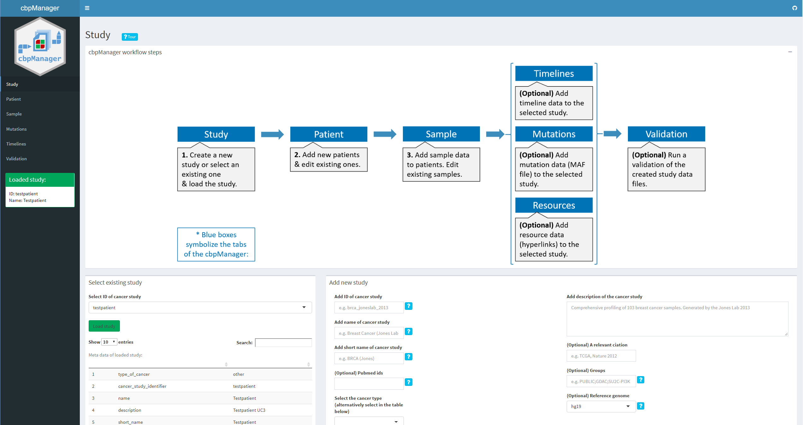

Maintainers
Arsenij Ustjanzew (arsenij.ustjanzew@uni-mainz.de)
Intuitive visualization and interactive exploration of multidimensional cancer genomics data sets is essential to the field of cancer genomics. The cBioPortal for Cancer Genomics is an open-access, open-source tool that can integrate different types of alterations with clinical data. “The goal of cBioPortal is to significantly lower the barriers between complex genomic data and cancer researchers by providing rapid, intuitive, and high-quality access to molecular profiles and clinical attributes from large-scale cancer genomics projects, and therefore to empower researchers to translate these rich data sets into biologic insights and clinical applications.” (read more about cBioPortal for Cancer Genomics here.) cBioPortal enables the installation of an own instance for the analysis of your own data. The data for uploading to the own instance must have certain file formats. Although these specifications are documented in detail here, the creation of such specific files is not easy for medical professionals or technically inexperienced persons and is often very time-consuming.
The R package cbpManager provides an R Shiny application that facilitates the generation of files suitable for the import in cBioPortal for Cancer Genomics. It enables the user to manage and edit clinical data maintain new patient data over time.

cbpManager will use the validateData.py script from cBioPortal for Cancer Genomics inside of the application, which allows the user to validate the created files. Therefore, a conda environment will be installed. To prevent long loading times during the application usage, we can setup the conda environment with the function cbpManager::setupConda_cbpManager() before launch.
Run the Shiny application with the following R command:
cbpManager::cbpManager()The installation was successful if the application starts working.
A study to be loaded in cBioPortal can basically consist of a directory where all the data files are located (see here). It is common to store the single study directories in one directory called e.g. “study”. If you already have a cBioPortal instance installed and such a folder containing study subfolders, you should provide the path when starting the application. Optionally, you can provide a directory path where a logfile will be created.:
cbpManager::cbpManager(
studyDir="path/to/study",
logDir="path/to/logingDirectory"
)Now you can select your already existing studies in the dropdown menu.
Optionally you can provide further parameters to cbpManager::cbpManager() function that are used by shiny::runApp, e.g. host or port.
If cbpManager should recognize files of a study, the files should be named as following:
data_clinical_patient.txt (Clinical Data)
data_clinical_sample.txt (Clinical Data)
data_mutations_extended.txt (Mutation Data)
meta_study.txt (Cancer Study)
meta_clinical_patient.txt (Clinical Data)
meta_clinical_sample.txt (Clinical Data)
meta_mutations_extended.txt (Mutation Data)
Optional files:
data_timeline_surgery.txt / meta_timeline_surgery.txt
data_timeline_status.txt / meta_timeline_status.txt
data_timeline_treatment.txt / meta_timeline_treatment.txt
Further custom timeline tracks should be named:
e.g. data_timeline_<custom>.txt / meta_timeline_<custom>.txt
For further details see File Formats and the ‘testpatient’ study in this package under ‘inst/study/’.
See here
Arsenij Ustjanzew (arsenij.ustjanzew@uni-mainz.de)
Feel free to dive in! Open an issue or submit PRs.